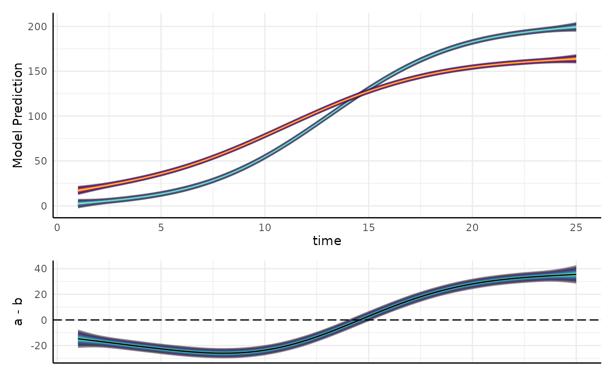

Helper function for visualizing differences in GAMs fit with mgcv::gam
Source: R/gam_helpers.R
gam_diff.RdNote that using GAMs will be less useful than fitting parameterized models as supported by
growthSS and fitGrowth for common applications in plant phenotyping.
Usage
gam_diff(
model,
newdata = NULL,
g1,
g2,
byVar = NULL,
smoothVar = NULL,
cis = seq(0.05, 0.95, 0.05),
unconditional = TRUE,
plot = TRUE
)Arguments
- model
A model fit with smooth terms by
mgcv::gam- newdata
A data.frame of new data to use to make predictions. If this is left NULL (the default) then an attempt is made to make newdata using the first smooth term in the formula. See examples for guidance on making appropriate newdata
- g1
A character string for the level of byVar to use as the first group to compare, if plot=TRUE then this will be shown in blue.
- g2
The second group to compare (comparison will be g1 - g2). If plot=TRUE then this will be shown in red.
- byVar
Categorical variable name used to separate splines as a string.
- smoothVar
The variable that splines were used on. This will often be a time variable.
- cis
Confidence interval levels, can be multiple. For example, 0.95 would return Q_0.025 and Q_0.975 columns, and c(0.9, 0.95) would return Q_0.025, Q_0.05, Q_0.95, and Q_0.975 columns. Defaults to
seq(0.05, 0.95, 0.05)- unconditional
Logical, should unconditional variance-covariance be used in calculating standard errors. Defaults to TRUE.
- plot
Logical, should a plot of the difference be returned? Defaults to TRUE.
Examples
ex <- pcvr::growthSim("logistic",
n = 20, t = 25,
params = list(
"A" = c(200, 160),
"B" = c(13, 11),
"C" = c(3, 3.5)
)
)
m <- mgcv::gam(y ~ group + s(time, by = factor(group)), data = ex)
support <- expand.grid(
time = seq(min(ex$time), max(ex$time), length = 400),
group = factor(unique(ex$group))
)
out <- gam_diff(
model = m, newdata = support, g1 = "a", g2 = "b",
byVar = "group", smoothVar = "time", plot = TRUE
)
dim(out$data)
#> [1] 400 120
out$plot

out2 <- gam_diff(
model = m, g1 = "a", g2 = "b", byVar = NULL, smoothVar = NULL, plot = TRUE
)